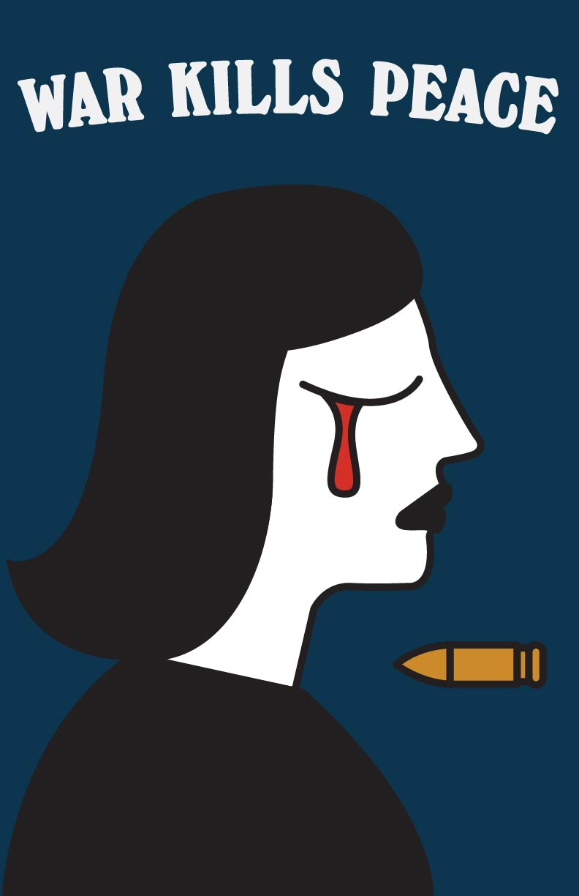

Sketch placeholder
Add concept sketches, thumbnails, or iteration sheets here.
Case Study · Design · 2025
This anti-war poster employs the Polish School of Posters' distinctive approach to social commentary through symbolic visual metaphor. Rather than using literal imagery or propaganda tactics, the design channels the movement's poetic and ambiguous visual language to advocate for peace.

Add concept sketches, thumbnails, or iteration sheets here.
Add studio, making-of, or work-in-progress images here.
Add presentation mockups, close-ups, or alternate views here.
Following the Polish School's emphasis on conceptual imagery over literal representation, the poster uses symbolic elements to communicate anti-war messaging. The visual language is painterly and expressive rather than photographic, with simplified forms that carry multiple interpretations. Color is used emotionally rather than realistically, creating psychological impact through unexpected palettes. The composition favors negative space and singular focal imagery, allowing the symbolic content to resonate without visual clutter. Typography is integrated as a graphic element rather than dominating the design, maintaining the poster's contemplative quality.
The poster demonstrates the Polish School's enduring relevance for protest design. By favoring metaphor over directness, the design invites reflection rather than dictating a message, showing how ambiguity and artistic expression can create powerful political communication that respects viewer intelligence.